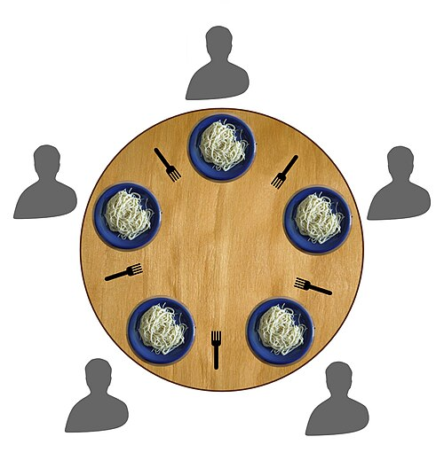

『Go言語で学ぶ並行プログラミング』は必読書である（夏の読書感想文2）

夏の読書感想文。 『にぎやかな未来』に続いて今回は『Go言語で学ぶ並行プログラミング』の感想文。
今年の1月から始まったオンライン読書会は第7回で無事に終了。 この記事ではあまり深堀りせず「訳者あとがき」やオンライン読書会の話などを中心にさらっと書いてみる。 なお『Go言語で学ぶ並行プログラミング』は版元で PDF 版が買える。 もしデジタル版をご所望であれば PDF 版を購入することを強くお勧めする。
オンライン読書会は翻訳者の柴田芳樹さんが主催者なのだが，柴田芳樹さんといえば Java の技術参考書の翻訳本でも有名な方で，今回の読書会でも Java との対比で解説されることも多々あり，非常に勉強になった。 サンプルコードなどは，タイトル通り Go 言語が前提になっているが，内容としては特定のプログラミング言語に限ることなく普遍的な内容になっている。
『Go言語で学ぶ並行プログラミング』は大きく三部構成になっている。
- 第1部 並行プログラミングの基礎
- 第2部 メッセージパッシング
- 第3部 並行処理のさらなるトピック
大雑把な内容はこんな感じ。
「第1部 並行プログラミングの基礎」では、Go 言語に限定せず、並行プログラミングについての多くの基礎的な事柄が説明されています。したがって、他のプログラミング言語での開発においても役立つ知識となるでしょう。実際、私自身も Go 言語を学ぶまでは、この第1部で紹介される技法だけで長年プログラミングを行ってきました。
「第2部 メッセージパッシング」では、Go 言語が提供するチャネルを中心に解説しています。そのため、内容の多くは Go 言語に特化しており、 Go でプログラミングを行う開発者にとって必須の知識となります。
「第3部 並行処理のさらなるトピック」は高度なトピックを扱っていますが、開発者として知っておくべき重要な領域です。
基本的に最初から順に読んでいくのがオススメだが，特に第1部と第3部は全てのプログラマが読むべき内容だと思う。 第2部は CSP (communicating sequential processes) と呼ばれる並行処理モデルについて詳しく解説している。 具体的には Go のチャネルを使ったデザインパターンを紹介している。
並行プログラミングを Go で書く強みは，カーネルレベルスレッドとユーザーレベルスレッドを組み合わせた極軽量1 な M:N スレッディングモデルと第一級オブジェクト（first-class object）として実装されているチャネルにある。 例えば，大量の軽量スレッドとチャネルを組み合わせたパイプライン・パターンを使った素数探索コードを紹介している。 “Go Playground” でもサンプルコードとして “Concurrent Prime Sieve” が例示されているので見比べてみると面白いかもしれない2。
『Go言語で学ぶ並行プログラミング』には Go では今や一般的になった context パッケージについての言及がない3。
その代わりもう少し簡単な quit チャネルを使ったパターンを紹介している。
Go 以外の言語で考える場合や context パッケージがとっつきにくいと感じる人は9章で登場する quit チャネルを使ったパターンで考えるほうが分かりやすいかもしれない。
「訳者あとがき」に書かれているが『Go言語で学ぶ並行プログラミング』にはメモリモデルについての言及がない。 Go の場合は公式ドキュメントとして “The Go Memory Model” が公開されているので，一度は目を通しておくとよいだろう。 でもドキュメントの冒頭に
If you must read the rest of this document to understand the behavior of your program, you are being too clever.
とか書いてあったりするので，沼らない程度にさらっと見るくらいでいいだろう4（笑）
他にも「訳者あとがき」には本編にはない有用な情報が書かれているので最後まで余さず読んでみてほしい。
以前は『Go 言語による並行処理』をお勧めしていたが，今なら断然『Go言語で学ぶ並行プログラミング』のほうをお勧めする（併せて読むとなおよし）。 まぁ，あとから出た本のほうがよく出来てるのは当然なんだろうけど。 斬新というわけではないが，並行プログラミングを書く際の基本を押さえた堅実な内容だと思う。
以下は余談：
とあるオンライン読書会の雑談で出てきた話題なのだが「食事する哲学者の問題（dining philosophers problem）」というのがあるそうな。
簡単に言うとこんな感じに円卓に複数の哲学者がいて食事をするのだが

{kind=link}
食事にはひとりあたり2つのフォークが必要なのに人数分しか用意されていない。 そのままだとフォークの取り合いによるデッドロックが発生してしまうわけだ。 デッドロックによる飢餓（starvation）が発生しないようにするにはどうするか，という問題である（他にもいくつか条件があるが割愛する）。
並行プログラミングの練習問題として丁度いいよね。 これを Go で解くことを「夏休みの自由研究」にしようかと思っていたのだが，もたもたしてるうちに夏が終わりそうである。
ブックマーク
参考図書

- Go言語で学ぶ並行プログラミング 他言語にも適用できる原則とベストプラクティス impress top gearシリーズ
- James Cutajar (著), 柴田 芳樹 (著)
- インプレス 2024-12-04 (Release 2024-12-04)
- Kindle版
- B0DNYMMBBQ (ASIN)
- 評価
読書会のために購入。インプレス社の本は Kindle 版より版元で PDF 版を買うのがオススメ。「並行処理」について原理的な解説から丁寧に書かれている。 Go で解説されているが Go 以外の言語でも応用できる。

- プログラミング言語Go (ADDISON-WESLEY PROFESSIONAL COMPUTING SERIES)
- Alan A.A. Donovan (著), Brian W. Kernighan (著), 柴田 芳樹 (翻訳)
- 丸善出版 2016-06-20
- 単行本（ソフトカバー）
- 4621300253 (ASIN), 9784621300251 (EAN), 4621300253 (ISBN)
- 評価
著者のひとりは（あの「バイブル」とも呼ばれる）通称 “K&R” の K のほうである。この本は Go 言語の教科書と言ってもいいだろう。と思ったら絶版状態らしい（2025-01 現在）。復刊を望む！

- Go言語による並行処理
- Katherine Cox-Buday (著), 山口 能迪 (翻訳)
- オライリージャパン 2018-10-26
- 単行本（ソフトカバー）
- 4873118468 (ASIN), 9784873118468 (EAN), 4873118468 (ISBN)
- 評価

- Go言語 100Tips ありがちなミスを把握し、実装を最適化する impress top gearシリーズ
- Teiva Harsanyi (著), 柴田 芳樹 (著)
- インプレス 2023-08-18 (Release 2023-08-18)
- Kindle版
- B0CFL1DK8Q (ASIN)
- 評価
版元で PDF 版を購入可能。事実上の Effective Go とも言える充実の内容。オリジナルは敢えてタイトルに “tips” という単語を入れるのを避けたのに邦題が「100 Tips」とかなっていて，原作者がお怒りとの噂（あくまで噂）
-
Goroutine ごとに割り当てられる初期のスタックサイズは数KB程度で非常に軽量である。さらに処理に応じて動的にスタックサイズが変化する。 ↩︎
-
パイプライン・パターンを使った素数探索は，残念ながら速くない。これは素数探索に使える最適化アルゴリズムが使えず，発見した素数の数だけフィルタ処理を行う goroutine が生成されてしまうため。 “Concurrent Prime Sieve” は
main()関数で指定した数だけ素数を探すのだが，たとえば100個の素数を探す場合は最大で100個の goroutine が生成され goroutine 間を繋ぐチャネルも同じ数だけ生成される。多数のスレッド（goroutine）を苦もなく生成・駆動・通信する例としては面白いと思うけどね。 ↩︎ -
contextパッケージについては『Go言語 100Tips』の8章〜9章で触れられている。また『Go言語による並行処理』の4.12節にも詳しい解説がある。 ↩︎ -
Go のメモリモデルについては『Go言語 100Tips』の8.4.2節に言及がある。 ↩︎